Entropy, Information and Bias Correction Primer¶
Entropy and Mutual Information¶
Entropy is a
measure of uncertainty. This is a function of a discrete probability
distribution and is defined as the expected value of the surprise. The
surprise of a particular observation is equal to log of the reciprocal of the
probability of the observation — for an observation  the surprise is
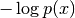. An event with a large probability will have a small
surprise (since it is relatively likely to occur); an event with a small
probability will have a high surprise (since it is less likely to occur). The
entropy is then the average of this value over all possible observations,
weighted by the probability of each observation. For a finite discrete set,
the distribution with maximum entropy is the uniform distribution, where each
possible observation has an equal chance of occurrence, for example rolling a
fair die. Since in this case nothing can be predicted about the outcome of any
particular observation, it is the most uncertain distribution possible.
Similarly, the distribution with minimum entropy would be one where the
probability of one specific event is equal to 1 and the probability of all
other events is 0. In this case, there is no uncertainty about any particular
observation and the entropy is zero. In general, a more evenly distributed
probability density will result in a distribution with higher entropy.
the surprise is
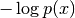. An event with a large probability will have a small
surprise (since it is relatively likely to occur); an event with a small
probability will have a high surprise (since it is less likely to occur). The
entropy is then the average of this value over all possible observations,
weighted by the probability of each observation. For a finite discrete set,
the distribution with maximum entropy is the uniform distribution, where each
possible observation has an equal chance of occurrence, for example rolling a
fair die. Since in this case nothing can be predicted about the outcome of any
particular observation, it is the most uncertain distribution possible.
Similarly, the distribution with minimum entropy would be one where the
probability of one specific event is equal to 1 and the probability of all
other events is 0. In this case, there is no uncertainty about any particular
observation and the entropy is zero. In general, a more evenly distributed
probability density will result in a distribution with higher entropy.
Mutual information (or just information) is a function of two random variables (for example the input and output of a system). It is defined as the average reduction in uncertainty (measured by entropy) about one of the random variables after the other is observed. If the two variables are completely independent, then observing the outcome of one will have no effect on the uncertainty of the other, and hence the information between them is 0. An alternative but equivalent definition is that information is the Kullbeck-Leibler divergence (a measure of distance between two probability distributions) between the joint distribution of the two variables, and the product of the individual distribution of each variables (the independent distribution). It therefore quantifies how far the joint distribution is from independence, or how strongly the two variables are correlated. When the logarithm used in the definition of the surprise is base-2, as is conventionally the case, the units of the information are called bits. 1 bit corresponds to a reduction of uncertainty of a factor of 2. For example, if a die is rolled and an observer is told that the resulting number is odd, this reduces the number of possible outcomes for this observation from 6 to 3 — this is 1 bit of information.
Bias¶
Origins of sampling bias¶
Calculating entropy and information requires estimates of the underlying probability distributions which must be obtained from experimental observations. With an infinite amount of data, these distributions can be learned exactly, but when limited data is available, the probability estimates can be effected. For example, low probability events may not occur in the experimental sample, which results in the variability of the distribution being under estimated (the entropy is biased downwards).
The bias of the entropy is a big problem since information is calculated as the difference of two entropies. This difference is often much smaller than the two entropies involved, so even a very small proportional bias error in the entropy can have a large effect on the information. Information is biased upwards, since of the two constituent entropy quantities, the second (negative term) has a larger downward bias. Intuitively, this can be because with a limited amount of data, spurious chance corrleations between the variables can artificially inflate the true information value.
Bias correction methods¶
There are a number of bias correction techniques that have been developed to address this problem.
For more information see
RAA Ince, RS Petersen, DC Swan and S Panzeri (2009) “Python for information theoretic analysis of neural data” Frontiers in Neuroinformatics 3 4 link
S Panzeri, R Senatore, MA Montemurro and RS Petersen (2007) “Correcting for the sampling bias problem in spike train information measures” Journal of Neurophysiology 98:3 1064-1072
pyEntropy¶
Bias Corrections¶
pyEntropy currently implements the following bias correction methods, specified with method argument to pyentropy.systems.BaseSystem.calculate_entropies():
- plugin
- The standard plugin or naive entropy estimator.
- pt
- Panzeri-Treves bias correction [PT96]. This is the Miller-Madow analytic correction, where the number of non-zero responses is estimated using a Bayesian procedure rather than the naive count, yielding much better results.
- qe
- Quadratic extrapolation [Strong98]. See above.
- nsb
- Nemenman-Shafee-Bialek method [NSB02].
Which method should I use?¶
This is a difficult question and is to some extent subjective, being a trade off between bias, variance and computational requirements. It is complicated by the fact that these factors are also affected by the statistics of the system being studied. Generally is you have a single variable X space the best results are obtained with the NSB estimator, but it is much slower to compute than the other methods. If you have a multi-variable X space, the best results are achieved with the shuffled estimator, corrected with either PT or QE. The best thing to do, if possible, is to test the methods with simulated data with similar statistics. Future versions of pyEntropy will include helper functions to make this easier.
Entropy Values¶
pyEntropy currently implements the following entropy values, specified in calc argument to pyentropy.systems.BaseSystem.calculate_entropies():
- HX
- 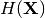 – unconditional entropy of X.
- HY
- 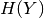 – unconditional entropy of Y.
- HshX
- 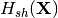 – shuffle-decorrelated independent unconditional entropy of X. (X components are shuffled).
- SiHXi
- 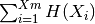 – direct-decorrelated independent unconditional entropy X. Summing the individual entropies corresponds to constructing the analytic independent joint distribution (product of individual distributions).
- HXY
- 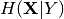 – entropy of X conditional on Y.
- HiXY
- 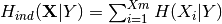 – direct-decorrelated independent conditional entropy.
- HshXY
 – shuffle-decorrelated independent
conditional entropy. X components are shuffled for each response Y (but not
between responses).
– shuffle-decorrelated independent
conditional entropy. X components are shuffled for each response Y (but not
between responses).- HiX
- 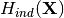 – unconditional direct-conditionally-decorrelated entropy of X. Entropy of 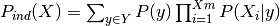
- ChiXY
- 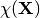 – cross entropy between 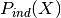 and 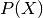
| [PT96] | Panzeri, S and Treves, A (1996) “Analytical estimates of limited sampling biases in different infromation measures” Network 7:1 87-107 |
| [Strong98] | SP Strong, R Koberle, RR de Ruyter van Steveninck and W Bialek (1998) “Entropy and information in neural spike trains” Physical review letters 80:1 197-200 |
| [NSB02] | I Nemenman, F Shafee and W Bialek (2002) “Entropy and inference, revisted” NIPS 14 95-100 |